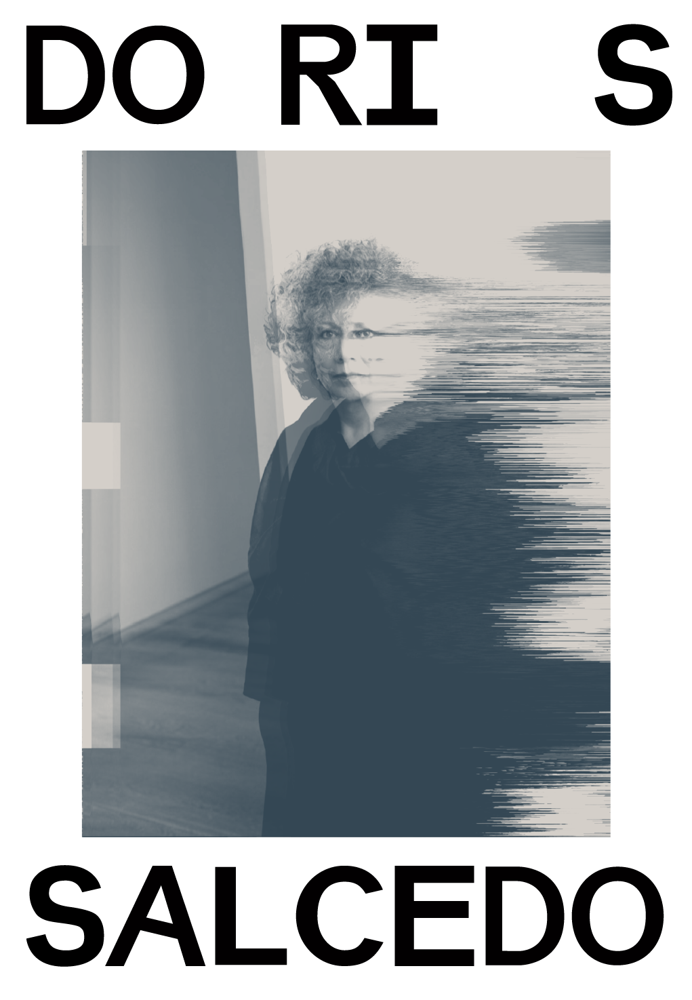
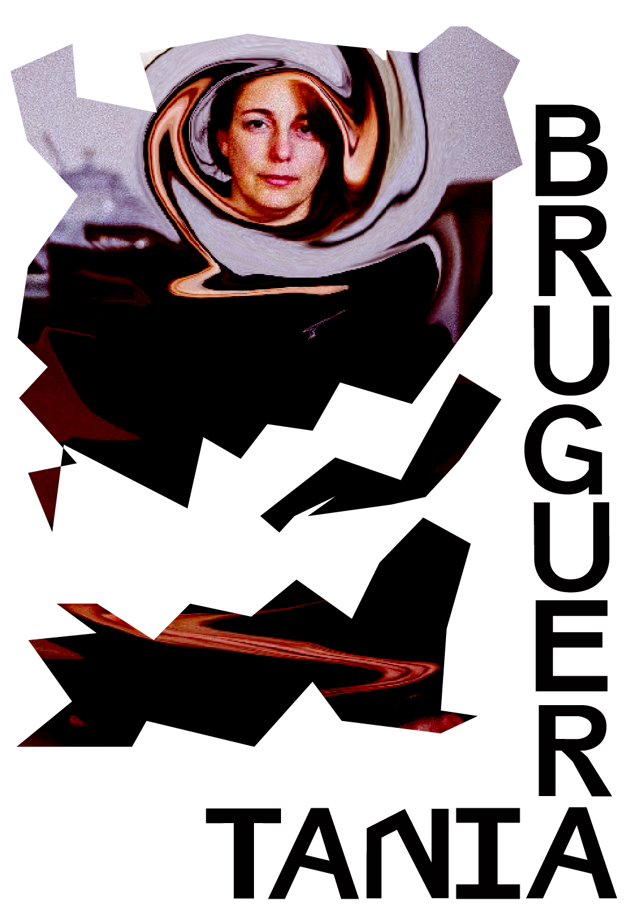
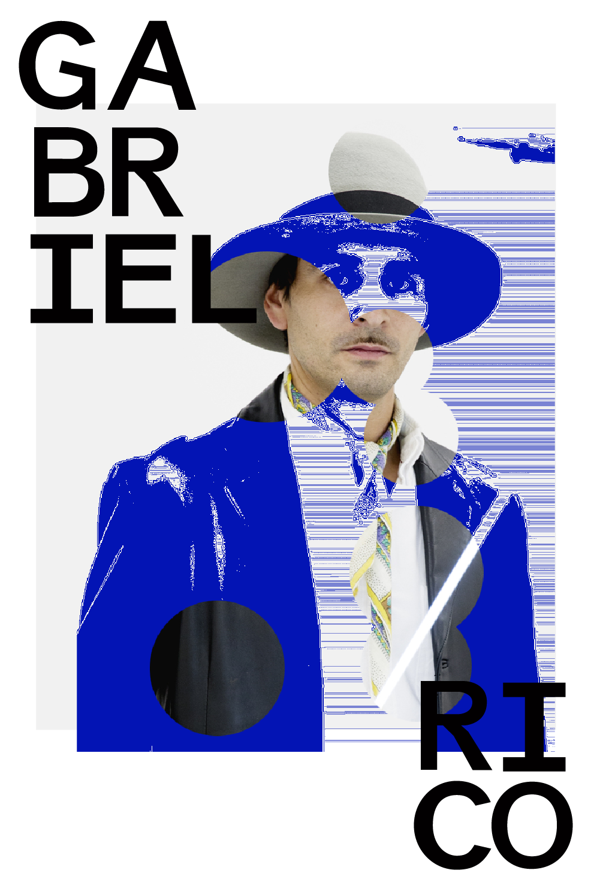
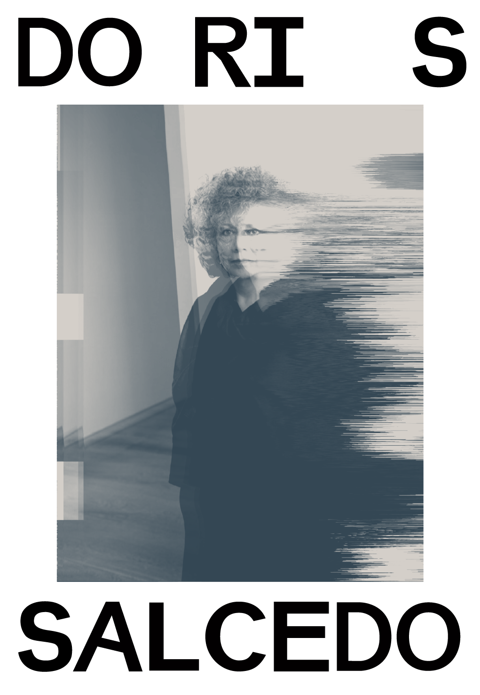
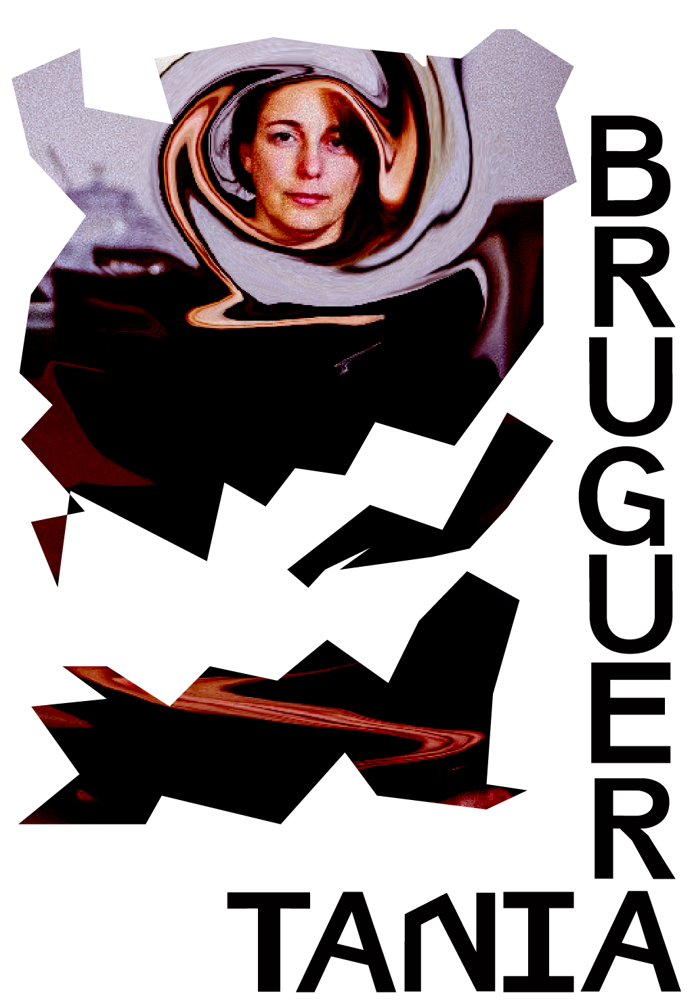
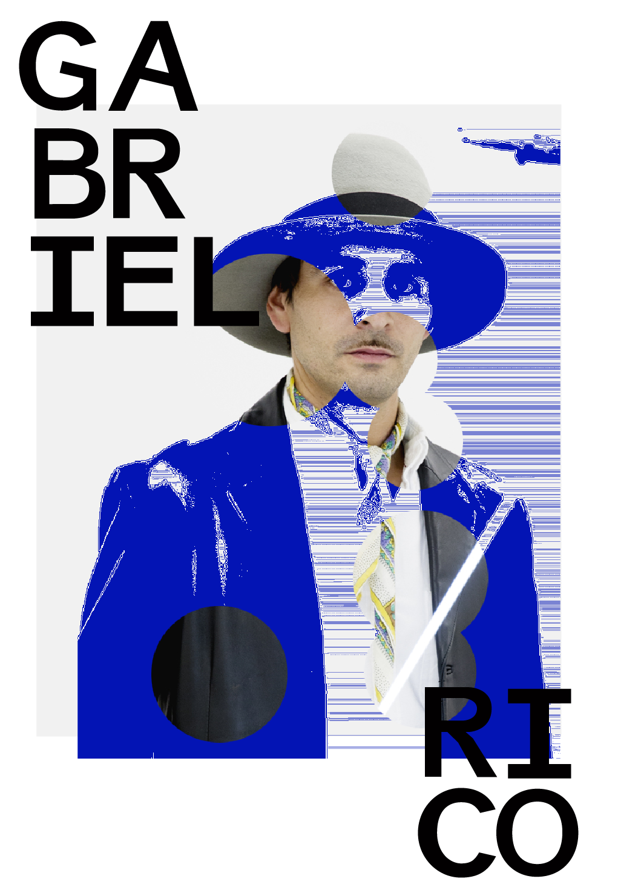

Revista Antko
Esta revista adjunta varios artistas latinoamericanos, con un estilo arraigado del manifiesto antropófago. No son explícitos al decir, pero se realizará un análisis del porque se los considera parte del movimiento. La herida colonial influencia los sentidos, las emociones y el intelecto. En el caso del arte y de la estética, la herida es sentida y sufrida (en las emociones y en el intelecto) por aquellas personas cuyo hacer operando con “elementos simbólicos que afecten los sentidos, las emociones y el intelecto” no son considerados artísticos, y tal consideración se legitima en el discurso filosófico que define la estética como la disciplina que se ocupa de investigar el sentido del arte. Se puede decir que la estética y el arte modernos son constituidos y constituyentes del problema de la modernidad y su premisa mayor el eurocentrismo en la medida en que forma parte de su sistema/mundo, cuya lógica medular está determinada por el capitalismo y la racionalidad científico-tecnológica. El arte y la estética modernos, en todas sus variantes y con su secreta aspiración a lo Uno (un arte y una estética válidos), expresan la matriz modernidad/colonialidad en sus modos de representación, en sus cuerpos discursivos, en sus instituciones, y en sus modos de distinción y producción de sujetos y sujeciones.

 




